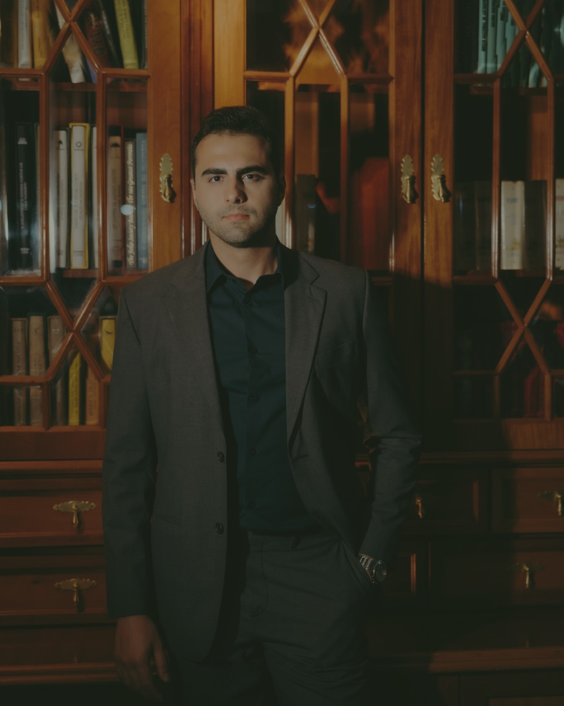

Esta fruta tem pouco mais de um centímetro
Durante a cirurgia, a câmera do robô amplia a imagem em até dez vezes, em três dimensões. O cirurgião enxerga vasos e nervos finos que passariam despercebidos a olho nu.
Cortes de cerca de um centímetro, imagem ampliada em 3D e pinças que giram dentro do corpo. Em Goiânia, com o Dr. Pedro Moreira, cirurgião coloproctologista.
Tem uma jabuticaba em cima da mesa. Role a página e o robô vai buscá-la.
Durante a cirurgia, a câmera do robô amplia a imagem em até dez vezes, em três dimensões. O cirurgião enxerga vasos e nervos finos que passariam despercebidos a olho nu.
O sistema filtra o tremor natural das mãos e reduz a escala do movimento. Um gesto de três centímetros no console pode virar um centímetro dentro do corpo.
As pinças dobram e giram em espaços estreitos como a pelve, onde ficam o reto e os nervos ligados ao controle da urina e à função sexual. Trabalhar ali com mais alcance ajuda a preservar o que não precisa ser retirado.
Cada movimento vem das mãos do Dr. Pedro, sentado no console, dentro da sala de cirurgia. O robô não decide nada. Ele repete o gesto do cirurgião com mais firmeza.
Cirurgia aberta
Uma incisão de 15 a 20 cm no abdome.
Cirurgia robótica
Quatro ou cinco incisões de cerca de 1 cm e uma de 4 a 6 cm, por onde sai o trecho de intestino retirado.
Nem todo caso é para o robô. A indicação depende do diagnóstico, de cirurgias anteriores e das condições de saúde de cada pessoa. Isso é decidido em consulta, com os exames em mãos.
O reto fica no fundo da pelve, cercado de nervos e vasos. É a região onde a articulação das pinças faz mais diferença.
Retirada do trecho doente do intestino grosso junto com os linfonodos da região, por pequenas incisões.
Crises repetidas ou complicadas, quando a retirada do segmento afetado passa a ser recomendada.
Nos casos em que o tratamento clínico não basta e a cirurgia entra no plano.
Conversa sem pressa, exame físico e revisão do que você já tem em mãos, como colonoscopia, biópsia e exames de imagem.
Você fica sabendo qual cirurgia é indicada, por qual via e o que esperar. Nos casos de câncer, o plano é alinhado com a oncologia.
Anestesia geral. O Dr. Pedro opera no console, e a equipe permanece ao lado da mesa durante todo o procedimento.
Você é estimulado a caminhar cedo. Depois da alta, os retornos acompanham a cicatrização e os resultados dos exames.

Dr. Pedro Moreira é cirurgião coloproctologista. Trata doenças do intestino, do reto e do ânus, com dedicação especial ao câncer colorretal.
No consultório, a prioridade é que você entenda o que está acontecendo com o seu corpo e participe das decisões.
Não. O robô não tem autonomia. Ele só se move enquanto o cirurgião está com as mãos nos controles e os olhos no visor. Se o cirurgião se afasta do console, os instrumentos param.
Não. Algumas situações pedem cirurgia aberta ou videolaparoscopia. A escolha leva em conta o tipo de doença, cirurgias abdominais anteriores e o seu estado geral de saúde.
Depende do procedimento e de como o seu organismo reage. Em cirurgias de intestino, a internação costuma ser de alguns dias. Na consulta você recebe uma previsão para o seu caso.
As consultas são particulares, e o consultório fornece a documentação para pedido de reembolso. A cobertura da cirurgia e do uso do robô varia conforme o plano e o hospital. A equipe orienta você sobre isso antes de marcar o procedimento.
Pelo WhatsApp (62) 99600-6080, de segunda a sexta, das 8h às 18h. Se já tiver exames, leve todos no dia da consulta.
Na consulta, o Dr. Pedro avalia o seu caso e diz com clareza se a cirurgia robótica é o melhor caminho para você.
Agendar consulta pelo WhatsAppConsultórioAv. Portugal, 1148, sala B-3802
Ed. Órion Business, Setor Marista
Goiânia, GO
AtendimentoSegunda a sexta, das 8h às 18h
WhatsApp(62) 99600-6080